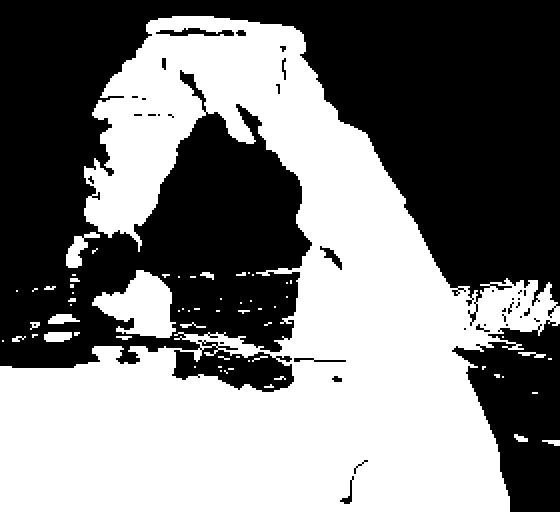

Superstructure
Reports from between the years of 2004 to 2009 were declassified by the National Archives and Records Administration of the United States of America which uncovered an enigmatic series of events and destinations in the area surrounding Highway 191 in south eastern Utah. Vibrations between 70hz and 80hz had been reported between this time period from locations in Utah. Those being of: Moab, Spanish Valley, Castle Valley, Arches National Park and as far as Canyonlands National Park. These vibrations were subtly detected in quiet areas usually heard in rural areas. These sounds were in certain instances accompanied with repeated (and as of now redacted description of a number of) higher-pitched sounds. These sounds left undescribed have been attributed by a number of individuals as being similar to the sounds of the ‘sky horn’ phenomenon thought to be caused by certain meteorological circumstances. Others describe the unknown sound as a sharp, echoed and ghastly noise akin to “two massive rusty sheets of metal rubbing against each other.” The accounts of each of the instances at hand then lead to the conclusion from the estimated distance of the noises heard and their predicted decibel levels when heard; it was determined that the sound at its source location was approximately 140 decibels at its maximum during the crest of its volume. Another unnumbered amount of redacted documents from the National Archives showcased a description of an obscured facility northeast of Moab, Utah. This facility was described indirectly from its original document as an attempt to conceal and diverge information relating to the current whereabouts of the managerial staff and general perations of the work at progress. Throughout the theorized description of the facility, it was likely to be inferred as a concealed and/or underground superstructure beneath the surface northeast of the Utahn town of Moab, possibly under the smaller town of Castle Valley but reaching just south of Highway 128. The estimated size of the area of this structure was not described but was thought to be between 20 mi^2 and 100 mi^2. A structure containing various large openings with walled layouts akin to panopticons seemingly connected by winding hallways and miscellaneous, longform rooms with shorter ceilings similar to an office floor. Each area of the facility divided up in an unknown number of sectors was defined with a description of liminality and a wide volume of empty space unoccupied from equipment which had been described by a verified third-party source. The panopticons were described vaguely but were alluded to be ‘steep in its angularity and height’ or in other words possibly contained multiple stories --- essentially every room inside the facility is unknown in its true intended purpose and no surviving photographs of the facility exist. The Department of the Interior during the year of 2010 oversaw an overhaul of finances as it pertained to the increasing interest over the facility itself. It had come to public knowledge in recent years that the facility was not run by the United States Department of the Interior or The U.S Military. Seemingly enough, public evidence of the facility’s existence was seized by the Central Intelligence Agency and then granted to the higher U.S Government, which grew a higher amount of suspicion of the true amount of information that was known by the government about the facility beforehand. The true owners of the facility are unknown to the public and the facility was slated for an investigation six months after the overhaul, involving a team of two-hundred personnel searching a 100 mi^2 area of the northeast of Moab. The investigation which took place concluded that the existence of a large, underground superstructure was false --- a stark contrast from the accounts taken from the National Archives. As soon as the accounts of the facility’s existence was revealed in 2013 by rogue staff, various Government personnel attempted to censor and potentially arrest the distributors of the documents themselves who shared them over the internet. Looking back on the National Archives’ description of the structure, it seems that the United States Government in fact did know of the facility and its unknown operations; they wished to conceal the incident from the public to prevent curiosity. It seems today that the Department of the Interior either willfully partook in the investigation and was fabricating their whereabouts in relation to the facility, or the Department in fact was used by the Government who never alerted to them of their knowledge of the facility and let them conduct a meaningless search for the superstructure anyways. The questions that still exist to this day --- the ‘what’ and ‘why’ are still unanswered. Conspiracies have propped up over the years after the incident occurred, but none account for the absolute size of the facility itself.